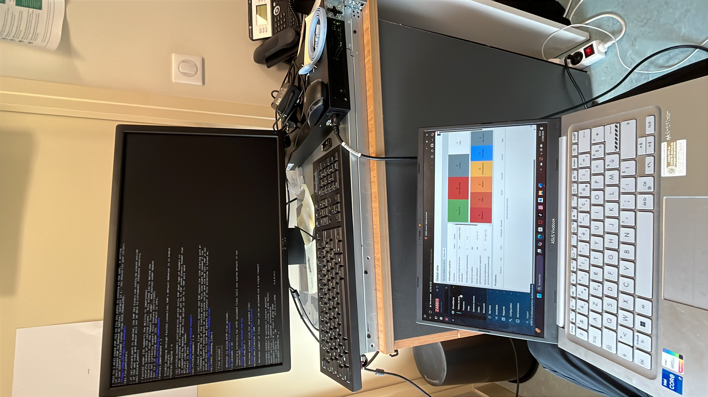
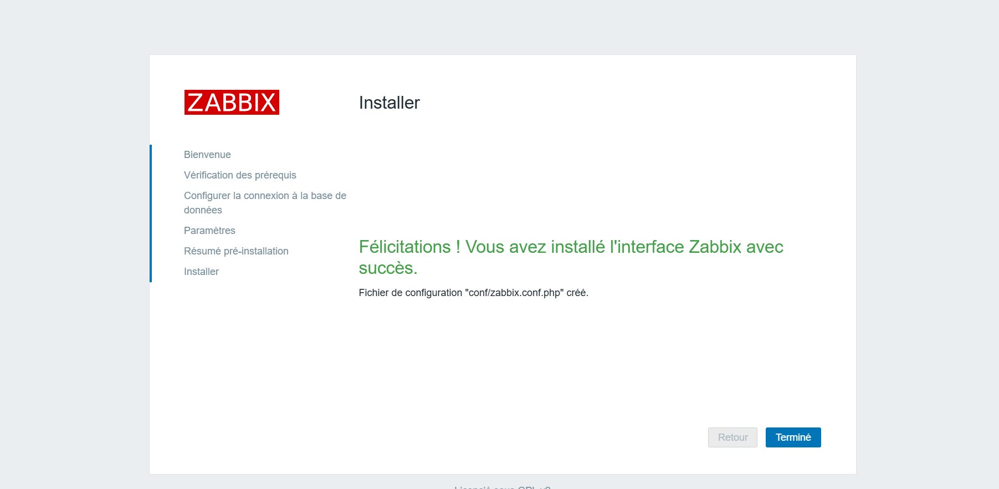

Durant mon stage de 8 semaines à la mairie de Coignières, j’ai configuré un serveur Debian 12, mis en place Zabbix pour la supervision réseau, et documenté l'infrastructure existante. Voici les principales étapes de ce projet :
Projet de stage – Supervision avec Zabbix

Installation de Debian 12 sur un serveur HP en ligne de commande.

Interface Zabbix fonctionnelle après configuration de MariaDB et Apache2.

Création du tableau de bord avec ajout d’hôtes et indicateurs réseau.
J'ai réalisé une documentation sur l'installation de l'application Zabbix la voici :
Voir la documentation PDF